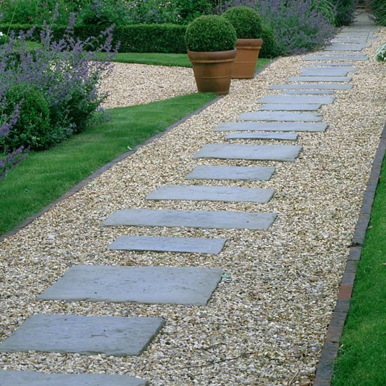
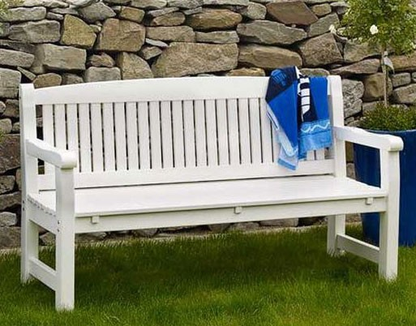
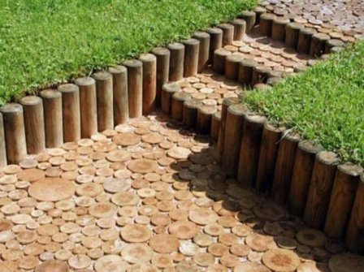
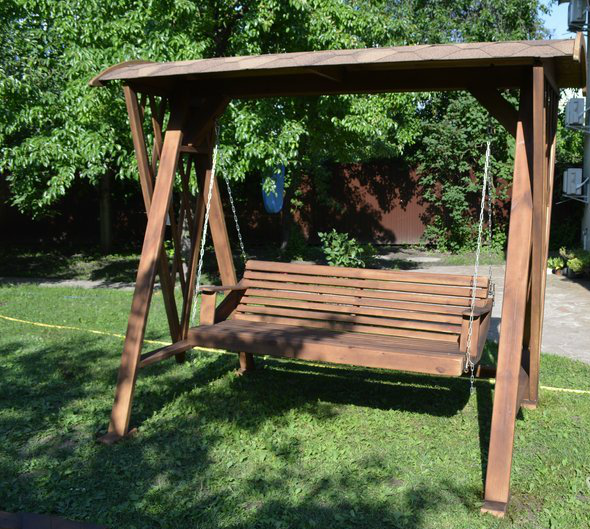

Мебель ДСП
Шкафы купе
Мебель для сада
Декор для садаКачели из дерева
Комерческая мебель
БанкеткиНовости
Новости о мебелиСадовая мебель из дерева, деревянные беседки и навесы.
Мы искренне приветствуем вас на сайте нашей компании! Мы занимаемся созданием и выпуском деревянной мебели, а также предлагаем качественные деревянные перголы, навесы и беседки из дерева для вашей дачи. Это весьма необходимые и эстетически дополняющие интерьер элементы повседневного декора. Наши специалисты по заказу могут сделать уникальные деревянные садовые качели из древесного массива прекрасно подходящие для сада возле дома.
Бисетки Садовые дорожки Садовая мебель



Садовые наборы Декорирование сада Садовая мебель3


Наша компания работает на отечественном рынке долгие годы, а потому мы хорошо себе представляем запросы современного человека, который пытается обустроить собственный дачный участок. Здесь важна каждая мелочь, и деревянная мебель является тем символом совершенства, к которому стремится любой человек. Садовая мебель из металла изначально позиционирует себя, как первозданный элемент домашнего декора. Кровать, деревянные беседки, стулья, шкафы, выполненные из древесного массива, были и в доме наших предков. Такая мебель зародилась еще с древнейших времен, когда во дворцах и резиденциях использовались именно такие элементы интерьера. Прошло много лет, но производство мебели из дерева не изжило себя, а, наоборот, явилось весомым гарантом качества и надежности. И вековая история тому в подтверждение!
Летние беседки.
Устанавливая беседку в собственном саду, вы создаете то место, где все родственники и гости смогут собираться за обедом или вечером душевно побеседовать. Тут одновременно удачно можно спрятаться и от дождя, и от палящего солнца. Беседка удачно с точки зрения ландшафтного дизайна разделяет пространство сада. Наша компания создает удивительные по красоте беседки и навесы, и в этих словах нет лестной саморекламы. Все дело в индивидуальном подходе к каждому из проектов. Впрочем, сама беседка из древесного массива уже являет некий эстетически завершенный элемент. Можно подумать о сочетаемости цветовой гаммы, высоты крыши и ее форме. Все эти детали очень важны при создании конечного продукта.
Деревянные перголы и навесы из дерева на даче.
Современные перголы очень важны при создании завершенного дизайна сада.Это сложная, но довольно красивая конструкция для вертикального озеленения. С их помощью можно создать особую зеленую крышу или арку из молодых лоз. Нашим мастера могут выполнить ваш собственный эскиз либо предоставят одну из готовых моделей.
Навесы из дерева можно назвать облегченным, а в некоторых случаях и усовершенствованным видом дачной беседки. Это импровизированная крыша на прочных поручнях, которая защищает огражденное пространство от дождя, солнца и снега. Здесь можно обустроить открытую веранду и с упоением проводить время на улице. Неподалеку можно разместить качели садовые, чтобы дети могли окунуться в загородный Рай.
Создайте уникальный домашний уют за счет садовая мебель из металла.

Продажа недорогой садовой мебели из натурального дерева – это наша первостепенная функция и задача. Много лет назад мы осознали, насколько популярна и востребована она в настоящий день. Здесь не надо лишних слов – откройте в поисковой машине картинки по запросу «мебель фото», оптимизируя запрос именно под деревянные образцы, и вы поймете, насколько красивы подобные изделия.
Наш каталог мебели также в изобилии представлен сочными фотоснимками, которые с первого взгляд приковывают к себе внимание. Подобная домашняя атрибутика будет весьма уместна в загородном доме. Садовая мебель сполна обогатит пространство возле дома.
Современный Интернет садовую мебель из металла для загородного дома высоко превозносит. Подобное оформление сада и дома очень популярно и востребовано сегодня. Мы же реализуем мечты многих из вас!